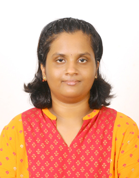

Brand Strategy
Crafting positioning, campaign direction, and audience-first narratives for stronger brand visibility.
I'm an MBA candidate specializing in Marketing and Analytics with a Computer Science engineering foundation. I blend business strategy, digital marketing, research, and data analysis to create smarter brand decisions and measurable customer impact.

I am pursuing an MBA in Marketing and Analytics at Amrita School of Business, Coimbatore, and I hold a B.Tech in Computer Science and Engineering from SRM Institute of Science and Technology, Ramapuram. My work sits at the intersection of technical fluency, consumer understanding, marketing strategy, and data-driven insights.
Crafting positioning, campaign direction, and audience-first narratives for stronger brand visibility.
Gathering consumer insights through interviews, field visits, surveys, and competitive analysis.
Supporting SEO, social media growth, Google Ads, and email-driven campaign execution.
Turning data into actionable marketing decisions using Python, SQL, and business analysis.
Amrita School of Business, Amrita Vishwa Vidyapeetham · Coimbatore, India
July 2024 – September 2026 · CGPA: 6.61/10 (T4 results pending)
SRM Institute of Science and Technology, Ramapuram Campus · Chennai, India
June 2018 – May 2022 · CGPA: 8.64/10
Rubecon Ad Agency LLP Communications Pvt. Ltd. · May 2026 – June 2026
Worked across 10+ client brands spanning FMCG, paints, eyewear, dairy, and fintech to support brand visibility, content strategy, and competitive analysis.
Integrated Enterprises (India) Pvt. Ltd. · April 2025 – June 2025
Completed a 9-week internship in digital marketing, working on SEO, Google Ads, social media management, email campaigns, and live campaign support.
I’d be glad to connect for marketing, analytics, branding, and research opportunities.